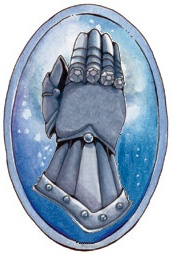
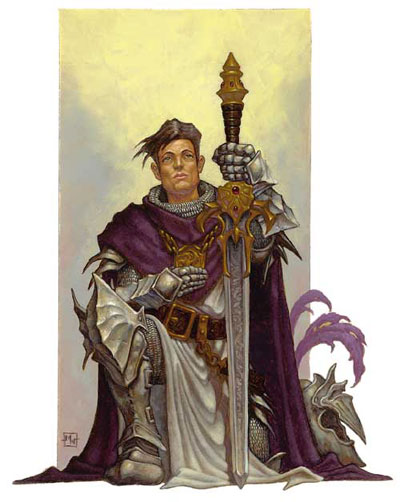

L'Ordre de Saris
Le temple du Poisson d'argent de Laelith, sur la Chaussée du lac, est également le siège local d'un ordre de paladins, le Gant de Saris.
Histoire
 L'origine de l'ordre remonte en 785, à Laelith. Cette année là, une épidémie de peste se propage aux portes de la cité, maladie apportée selon toute vraisemblance par des pèlerins venant de l'ouest. Gedrar, grand prêtre du temple du Poisson d'argent à cette époque, décide alors de faire construire un grand hospice dédié à Saris, déesse de la bienveillance et de la charité, pour soigner tous les malheureux frappés par la peste. Il fonde pour cela l'ordre de Saris, qui regroupe tous les prêtres engagés dans l'aide aux nécessiteux. Une fois l'épidémie éradiquée, l'hospice continuera d'accueillir et de soigner les pèlerins venus accomplir le « voyage de la cité sainte ». Le bâtiment est encore connu aujourd'hui sous le nom de Lazaret.
L'origine de l'ordre remonte en 785, à Laelith. Cette année là, une épidémie de peste se propage aux portes de la cité, maladie apportée selon toute vraisemblance par des pèlerins venant de l'ouest. Gedrar, grand prêtre du temple du Poisson d'argent à cette époque, décide alors de faire construire un grand hospice dédié à Saris, déesse de la bienveillance et de la charité, pour soigner tous les malheureux frappés par la peste. Il fonde pour cela l'ordre de Saris, qui regroupe tous les prêtres engagés dans l'aide aux nécessiteux. Une fois l'épidémie éradiquée, l'hospice continuera d'accueillir et de soigner les pèlerins venus accomplir le « voyage de la cité sainte ». Le bâtiment est encore connu aujourd'hui sous le nom de Lazaret.
En 910, à Laelith, les épidémies sont contrôlées et les soins donnés aux pèlerins sont efficaces. À cette époque, le problème principal est maintenant la sécurité des croyants, qui sont attaqués par des brigands et des créatures maléfiques tout au long de la longue route qui mène à Laelith. Saris s'est sacrifiée il y a tout juste deux ans pour sauver tout un royaume d'un terrible fléau, et à la tête du temple du Poisson d'argent officie depuis un grand prêtre de Torm, Tom Shetsis. Celui-ci décide alors de créer une deuxième branche à l'ordre. À la partie charitable de l'organisation, la Main de Saris, qui sera petit à petit principalement déléguée aux fidèles du dieu Ilmater, est accolée la partie militaire, le Gant de Saris, appellation qui reprend le symbole de Torm tout en gardant la référence à la déesse disparue. Raymond du Puy, un paladin renommé, en sera le premier haut commandeur. Les deux entités travaillent en parfaite collaboration.
1052, c'est la guerre d'épuration du sang en Agramor. L'ordre du Gant de Saris fournit de nombreux chevaliers pour aider la province dans son opération, avant de se rendre compte des arrière-pensées racistes qui animaient les locaux. Les pertes sont lourdes, l'ordre est très affaibli. C'est alors qu'apparaît en Agramor un dragon d'or répondant au nom de Thorval et qui se range aux cotés des forces du Bien. C'est lui qui permettra de remporter la victoire finale face au Mal. Toutefois Thorval, suite à cette victoire, et constatant la faiblesse des ex-fidèles de Saris, fonde l'ordre du Dragon d'Or, un ordre laïque voué lui aussi au combat contre le Mal, mais sans référence à la déesse de la charité. Depuis, le Gant de Saris s'est renforcé, et l'ordre du Dragon d'Or s'est imposé comme un allié fidèle et incontournable de l'ordre de Saris dans son combat contre les forces du Mal.
Hiérarchie
En 1083, le grand prêtre du temple du Poisson d'argent n'est plus, pour la première fois en plus de trois siècles, ni un prêtre de Saris, ni un prêtre de Torm. Décision est alors prise de séparer la direction de l'ordre de celle du temple. Le fonctionnement, toujours en vigueur depuis cette époque, devient alors le suivant :
CORRESPONDANCE
Les chapelains sont des prêtres ou des clercs du domaine de la vie de bas niveaux.
Les frères servants sont des acolytes ou des roturiers.
Les chevaliers sont des paladins de toute divinité loyal bonne.
Les frères écuyers sont des guerriers de bas niveaux ou des soldats.
- À la tête de l'ordre de Saris se trouve le grand maître, généralement un grand prêtre de Torm, même si l'ordre a vocation à recruter des membres de fois diverses.
- Sous lui se positionnent un conservateur et un haut commandeur, respectivement responsable de l'ordre de la Main de Saris et de l'ordre du Gant de Saris. La responsabilité principale du conservateur est d'assigner les membres aux divers hôpitaux et hospices, et celle du haut commandeur est de gérer la stratégie de l'ordre face aux forces du Mal en assignant les membres aux divers chapitres.
- Le niveau suivant est celui des hospices, pour la Main de Saris, et des chapitres, pour le Gant de Saris.
Actuellement, le grand maître de l'ordre est Valerian, prêtre de Torm et bras droit du grand prêtre du temple du Poisson d'argent. Tout le monde voit d'ailleurs en lui son probable successeur. Le conservateur, responsable de la Main de Saris, est une prêtresse demi-elfe d'un âge moyen, Kalya Fog, une fidèle d'Ilmater, le dieu de l'endurance. Et le haut commandeur est un vieux paladin de Torm, Franz Heilden. À bientôt 80 ans et fatigué par une longue vie d'aventures, il sait que ses jours parmi les mortels sont comptés, et en conséquence il prépare sa succession. Tous les trois logent dans les dépendances du temple du Poisson d'argent de Laelith, siège de l'ordre. Si l'un d'eux meurt ou se retire, les deux autres se réunissent pour désigner son successeur, qui peut être l'eux d'eux ou une tierce personne.
Les hospices
Chaque hospice compte entre 20 et 40 personnes et est dirigé par un administrateur, généralement le plus vieux ou le plus expérimenté des membres. Son rôle est de veiller aux affaires financières de l'hospice et de récolter des fonds auprès de bienfaiteurs. S'il meurt ou se retire, tous les membres de l'hospice votent pour sa succession. Les administrateurs portent un manteau blanc avec l'emblème de leur ordre, la Main de Saris. Tous les autres membres de l'ordre, généralement des prêtres ou des clercs du domaine de la vie d'alignement bon, sont appelés les chapelains. Ce sont eux qui prodiguent par l'intermédiaire de leurs sorts les soins aux nécessiteux. Un membre doit servir de consultant dans un hôpital au moins un mois par an. S'il ne peut ou ne veut le faire, il est susceptible d'être révoqué. Les chapelains sont aidés dans les tâches quotidiennes par des frères servants, qui officient comme assistants, et des roturiers. La proportion varie d'un hospice à l'autre, mais se situe aux alentours d'un quart de chapelains pour trois quarts de frères servants et roturiers.
Les membres de la Main de Saris se dévouent à guérir et aider gratuitement toutes les personnes qui le nécessitent, quels que soient leur rang social ou leurs convictions religieuses. Les seuls patients refusés sont ceux d'alignement mauvais. Les membres de l'ordre utilisent les fonds récoltés par les dons des particuliers ou ceux récupérés par le Gant de Saris pour construire et équiper des hospices de par le monde. Le royaume de Laelith en compte trois à ce jour :
- le Lazaret de Laelith
- l'hospice d'Espéria, en Olizya
- le fort du Reflet Béni, sur la route du Couchant
Un quatrième hospice est en construction à Azil.
Chaque membre de l'ordre reçoit toutes les fournitures médicales non magiques (bandages et autres) gratuitement, et a accès à tous les hôpitaux ou chapitres de l'ordre de Saris. La devise de la Main de Saris est « Il n'y a pas de plus pure gentillesse que le contact de la main d'un guérisseur ».
Les chapitres
Chaque chapitre est constitué également de 20 à 40 membres et dirigé par un commandeur, assisté de trois lieutenants. Si le commandeur venait à disparaître, les lieutenants se réuniraient et devraient parvenir à un accord à l'unanimité sur la personne la plus à même de lui succéder. Si un des lieutenants disparaît ou se retire, c'est le commandeur qui promeut un membre de l'ordre, généralement le plus expérimenté, à sa place. Le commandeur porte un bracelet d'or portant l'emblème de son ordre, le Gant de Saris. Les lieutenants portent des bracelets similaires, mais en argent. Les membres de l'ordre sont appelés les chevaliers. Leur tache principale est de protéger les pèlerins sur toutes les routes qui mènent à Laelith. Pour ce faire, ils n'hésitent pas à démanteler les bandes de brigands et à combattre les créatures maléfiques qu'ils rencontrent dans le royaume. Ils portent tous une écharpe bleu clair ornée de l'emblème de l'ordre et sont aidés dans les taches quotidiennes par des frères écuyers.
L'ordre possède plusieurs chapitres de par le royaume des Deux Lacs :
- le plus important est le chapitre du fort du Reflet Béni, sur la route du Couchant, qui abrite également un hospice
- le plus récent est le chapitre des Hautes Eaux, en Egonzasthan, à l'ouest de Kgoprnb
- les provinces d'Olizya (à Olizeÿna) et d'Agramor (à Goracht) en abritent également chacune un, de moindre importance
- celui de Laelith, situé dans les dépendances du temple du Poisson d'argent, n'est plus vraiment opérationnel et sert plus de retraite ou de lieu de réunion qu'autre chose
Le Gant de Saris n'est encore que très peu représenté au-delà des frontières.
Chaque membre de l'ordre reçoit lors de son intronisation une arme et une armure de belle facture, mais non magiques. L'ordre fournit aussi des chevaux de guerre si nécessaire. La devise du Gant de Saris est « La paix par la force ».
Rentrer dans l'ordre
Il y a deux moyens de rentrer dans l'ordre de Saris : être invité par un membre actif ou se proposer spontanément. Dans les deux cas, le candidat doit se faire parrainer.

Si le candidat souhaite rejoindre la Main de Saris, il doit être parrainé par un chapelain (un prêtre ou un clerc membre de l'ordre d'au moins un niveau de plus que le PJ). S'il souhaite rejoindre le Gant de Saris, il doit être parrainé par un chevalier (un paladin membre de l'ordre d'au moins un niveau de plus que le PJ). Une fois le parrain désigné, celui-ci présente formellement le candidat lors d'une réunion qui rassemble les hauts dignitaires du chapitre ou de l'hospice. Durant une année, l'aspirant sera mis à l'épreuve, évalué, observé, interrogé. À la fin de cette période, une nouvelle réunion aura lieu, ponctuée par un vote. Si la majorité prévaut, le candidat est alors accepté au sein de l'ordre.
Dans la Main de Saris, il n'y a pas de réelle cérémonie d'intronisation, la simplicité et l'abnégation prévalent. Dans le Gant de Saris, par contre, a lieu dans les deux semaines qui suivent le vote la cérémonie de l'adoubement simple, où la nouvelle recrue prête serment et allégeance à l'ordre « Je fais serment de servir et lutter pour le Bien, de rétablir la justice et de sauver la veuve et l'orphelin » et promet de respecter ses édits :
- Obéir aux lois de l'ordre et aux commandements des hauts dignitaires de l'ordre.
- Assister à toutes les réunions annuelles au temple du Poisson d'argent, à moins d'être inévitablement retenu ou de s'excuser par avance.
- Fournir aide aux membres de l'ordre le lui demandant.
- Arborer l'emblème de l'ordre sur son armure et son bouclier.
- Verser une aumône d'au moins 10% de tous ses revenus à l'ordre.
Par blueace